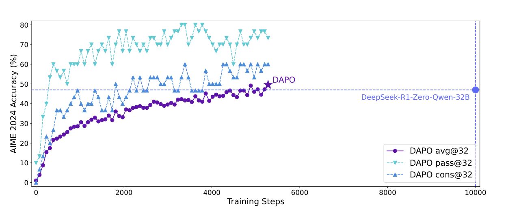
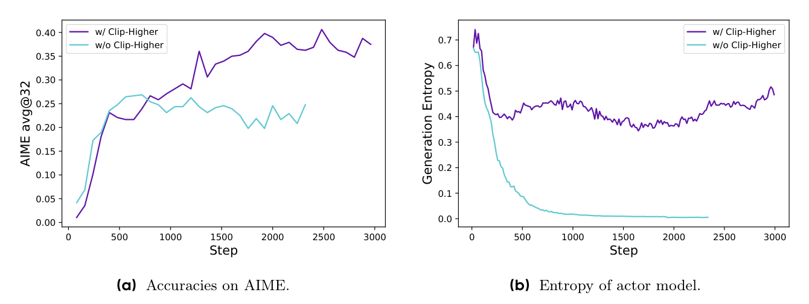
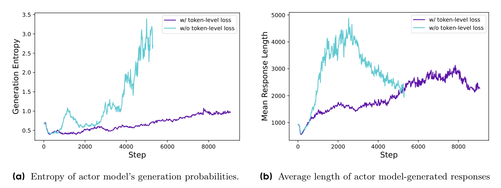
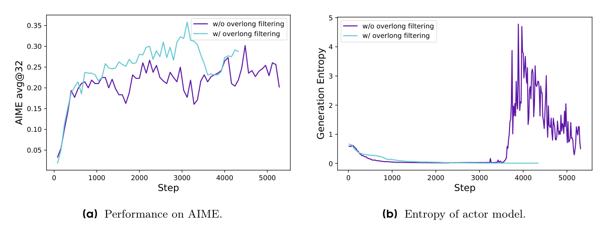

五分钟重建
长推理 RL 容易很快失去探索，也容易把更新浪费在全对或全错的题上。回答长度不同，还会改变每个 token 在损失里的权重。DAPO 分别处理这些问题。
保住探索空间
Clip-Higher 放宽正优势方向的上侧裁剪阈值。它修改目标激励，不是硬性扩大概率允许区间。
补充有区分的题
Dynamic Sampling 过滤组内奖励无差异的题，继续采样，直到有效训练批次补满。
按 token 聚合
Token-Level Loss 用全批有效 token 总数归一化。Soft Overlong Punishment 在接近长度上限时逐渐扣分。
具体例子（教学假设）：短回答 2 个 token，长回答 6 个 token。逐回答平均会让每个短 token 的聚合权重为 1/4、每个长 token 为 1/12；全批 token 平均时，每个 token 都是 1/8。此处只比较归一化权重。
边界：序列奖励不证明长回答的每个 token 都正确。动态采样需要额外 rollout；减少更新步数，也不自动保证所有机器上的墙钟时间减半。
换个条件看机制
把上侧 epsilon 从 0.2 改为 0.28，是把所有 r 强制锁在 [0.8,1.28] 吗？
不是。对正优势样本，目标沿提高概率的方向更晚变平。负优势样本概率错误增大时，min 仍可选择未裁剪项。实际概率也会受其他样本和损失影响。
2026-10-04：当日未进行理解检验。2026-10-25：实际复测中用长短回答权重表和正负优势变式补讲；补讲后复验收敛，仍需下次独立重建权重与裁剪机制。
一页看懂
02问题
论文的朴素 GRPO 基线遇到熵坍缩、有效批次缩小、长回答逐 token 系数被稀释和截断奖励噪声。clip 上侧阈值会让正优势目标更早变平，但实际概率没有被硬锁住。
方法
DAPO 去掉参考模型 KL 项。Clip-Higher 解耦概率比裁剪阈值；动态采样过滤全对/全错题并补满有效批次；Token-level Loss 统一归一化系数；软长度惩罚逐渐扣分；数据集改写为整数答案便于判卷。
结果
Qwen2.5-32B 基座在 AIME 2024 从 30 分暴涨到 50 分，训练步数仅需 DeepSeek-R1-Zero 的 50%；不依赖 SFT 演示，纯规则 RL 下模型自发涌现出中途自我反思（Wait a moment...）与重算纠偏行为。

DAPO 用四项改动改善长推理 RL：保住探索、补充有区分的题、按 token 分配损失权重，并缓和接近长度上限时的惩罚。
关键机制：Clip-Higher 与动态采样
03将 clip 项的上侧阈值提高到 1.28，下侧保持 0.8。外层 min 决定采用哪一项，实际概率比仍可越过阈值：

| 关键机制 | 朴素 GRPO 做法 | DAPO 创新重构 | 核心收益 |
|---|---|---|---|
| 裁剪区间 | 对称 [0.8, 1.2] | 非对称 [0.8, 1.28] | 放宽正优势上侧平台；负优势的坏动作概率升高时仍可保留纠偏信号 |
| 批次采样 | 固定 Batch 静态采样 | 动态剔除 Acc=0 与 Acc=1 的题目 | 过滤后补满有组内奖励差异的题；额外 rollout 仍有成本 |
机制深入：Token-level 损失与软惩罚
04样本级平均使每条回答总归一化份额相同，长回答中每个 token 的系数更小。DAPO 改用全批有效 token 总数作分母；相同系数不保证实际梯度相同，也不会单独识别每个废话 token。
| 归约方式 | 短回答每个 token | 长回答每个 token | 短/长回答的总归一化份额 |
|---|---|---|---|
| 每条先平均，再对回答平均 | 1/4 | 1/12 | 1/2、1/2 |
| 全部有效 token 合起来平均 | 1/8 | 1/8 | 1/4、3/4 |

Overlong Filtering 屏蔽截断样本的损失，减少未完成回答的奖励噪声。Soft Overlong Punishment 在接近长度上限的缓冲区逐渐扣分，与正确性奖励相加；最终答对也可能扣长度分，这不代表中间推理被判错。

证据与消融：四大技术的阶梯贡献
05在 Qwen2.5-32B 基座上逐项叠加技术，AIME 2024（avg@32）从 30 分一步步推至 50 分：
| 技术组合步骤 | AIME 2024 得分 | 步进收益 | 核心机制定位 |
|---|---|---|---|
| 朴素 GRPO 基准 | 30.0 | - | 基线遭遇严重熵坍缩与有效批次萎缩 |
| + 超长样本过滤（Overlong Filtering） | 36.0 | +6.0 | 减少未完成推导直接按错误处理的奖励噪声 |
| + 非对称裁剪（Clip-Higher） | 38.0 | +2.0 | 阻断策略熵断崖下跌，维持探索活力 |
| + 软超长惩罚（Soft Overlong Punishment） | 41.0 | +3.0 | 线性渐进惩罚，平滑长度过渡 |
| + Token-level 损失归约 | 42.0 | +1.0 | 按字计费，抑制低质复读膨胀 |
| + 动态重采样（Dynamic Sampling 全套） | 50.0 | +8.0 | 补满具有组内奖励差异的有效题目 |
代价与适用边界：
- 动态采样推理吞吐压力：后期剔除率高，需要推理引擎支持极高并发与吞吐；
- 强依赖精确规则判定：通过 DAPO-Math-17K 强制转换成整数答案，在难以自动化判卷的开放生成任务上较难直接推广。
卡壳点与解答
06Q1：为什么朴素对称 Clip 会引发熵坍缩？Clip-Higher 如何对症下药？
- 正优势的目标平台：对正优势 token，概率比超过上侧阈值后，该样本目标不再奖励继续提高概率。低概率但有用的 token 需要更大的相对增幅，放宽上侧阈值可延后平台。论文消融支持本设置下保住更多策略熵，不保证任意任务都出现相同变化。
- 实际概率不被硬截断：clip 只改变目标中一个候选项，再由外层 min 选较小者。给定 $A=1,r=1.25$，上阈值从 1.2 提到 1.28 后，未裁剪项为 1.25，目标不再处于上侧平台；实际比率仍可超过 1.28。
- 改变优势符号的反例（教学假设）：令 $A=-1,r=1.4$，clip 区间为 [0.8,1.28]。未裁剪项 $rA=-1.4$，裁剪项为 -1.28，min 选 -1.4。坏动作概率升高时，目标继续提供惩罚，不会因为超过上阈值就变平。
- 2026-10-25 补讲与表现：首次记得提高上界，但混称梯度裁剪。补讲概率比与目标平台后，正优势变式答对；进一步澄清实际概率不被硬截断后，负优势变式正确选未裁剪项。
Q2：样本级平均（Sample-level）与 Token 级平均（Token-level）在长思考链下的根本分歧是什么？
- 先分清两个层次：样本级平均使每条回答的总归一化份额相同。长回答把这一份摊给更多 token，所以每个 token 的系数更小，不是长回答总权重更大。
- 具体例子（教学假设）：两条回答分别有 2 和 6 个有效 token。只看归一化系数，暂不考虑优势、概率比与梯度差异：
| 归约方式 | 短回答每个 token | 长回答每个 token | 短/长回答的总归一化份额 |
|---|---|---|---|
| 每条先平均，再对回答平均 | 1/4 | 1/12 | 1/2、1/2 |
| 全部有效 token 合起来平均 | 1/8 | 1/8 | 1/4、3/4 |
- DAPO 的改动：分母为全批有效 token 总数。每个 token 的归一化系数一致，长回答因 token 更多而得到更大总份额。实际梯度仍取决于优势、概率比、裁剪状态与各 token 的参数梯度，不能把系数相同说成更新量完全相同。
- 负优势同理：样本级平均也会稀释长回答中每个 token 的负向系数，不利于纠正低质量重复模式。Token 级平均减少这种长度造成的权重差异，不会自动识别每个重复 token，也不保证梯度向量相加后大小必随长度增长。
- 2026-10-25 补讲与表现：首答将长短权重方向说反。用上表补讲后，换成 3/9 token 且都带负优势，正确指出短回答的逐 token 惩罚系数更大，改为全批 token 平均后系数相同。
Q3：动态采样额外生成了数据，为什么整体训练时间反而减少？
- 先过滤，再补满：同题一组回答全对或全错时，组相对优势为零。过滤的是这样的题目组，随后继续采样，直到有效题目数达到批次目标。只过滤不补满，仍会使有效批次随模型状态缩小。
- 梯度限定：零优势意味着任务奖励 surrogate 没有梯度。原版 GRPO 另有 KL 项；DAPO 已去掉参考模型 KL 项。保留下来的题具有组内奖励差异，不代表每个 token 都是高质量监督。
- 效率与成本分开看：补满有效题目可能减少无效更新，论文报告该实验收敛更快。额外 rollout 仍有成本，整体耗时取决于过滤率、并行度与长尾生成等待；不能保证所有机器都更快，也不能把 DAPO 全套系统的 50% 更新步数差异全部归因于动态采样。
- 软长度惩罚的补充边界：正确性奖励与长度扣分相加。即使最终答对，进入软长度缓冲区后也可能扣分；这是长度控制信号，不能据此判定中间步骤错误。Overlong Filtering 则屏蔽截断样本损失，用于减少未完成回答带来的奖励噪声。
- 2026-10-25 补讲与表现：场景首答重建了保留有对有错组的条件，补讲后进一步答出补满有效批次和总时间不保证。最后变式正确指出答对也可扣长度分，且与中间推理正误不同。
关联与来源
07DeepSeekMath
算法源头与痛点修复：DeepSeekMath 提出了首个免 Critic 的 GRPO 算法，但在上万 token 长思维链下暴露了四大暗礁；DAPO 是针对 Long-CoT 的直接升级系统。
PPO
裁剪边界的非对称改造：PPO 确立了经典对称裁剪目标（1±ε），DAPO 在其长推理实验中检验了非对称 Clip-Higher 对维持策略熵的作用。
Open-MOPD
长度与预算失衡的同源对照：Open-MOPD 揭示长短回答 25× 差距会导致 token 梯度严重倾斜；DAPO 的 Token-level 损失改为每个有效 token 使用相同归一化系数，长回答得到更大总份额。
- 完整笔记
- notes/papers/2025-dapo.html
- 源文件
wiki/papers/2025-dapo.md- Zotero 深链接
- zotero://select/items/QUHVNNHR（citekey:
yuDAPOOpenSourceLLM2025）